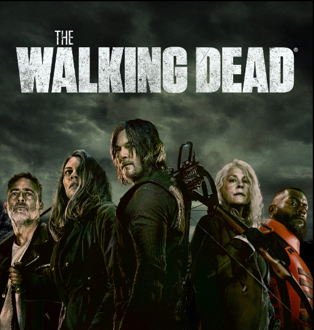

The Rookie is an American police procedural crime drama television series created by Alexi Hawley for ABC. The series follows John Nolan, a man in his forties, who becomes the oldest rookie at the Los Angeles Police Department (LAPD). The series is produced by ABC Signature and Entertainment One; it is based on real-life LAPD officer William Norcross, who moved to Los Angeles in 2015 and joined the department in his mid-40s.

The Walking Dead is an American post-apocalyptic horror drama television series based on the comic book series of the same name by Robert Kirkman, Tony Moore, and Charlie Adlard—together forming the core of The Walking Dead franchise. The series features a large ensemble cast as survivors of a zombie apocalypse trying to stay alive under near-constant threat of attacks from zombies known as "walkers" (among other nicknames). With the collapse of modern civilization, these survivors must confront other human survivors who have formed groups and communities with their own sets of laws and morals, sometimes leading to open, hostile conflict between them. The series is the first television series within The Walking Dead franchise.

Queen Sugar is an American drama television series created and executive produced by Ava DuVernay, with Oprah Winfrey serving as an executive producer. DuVernay also directed the first two episodes. The series is based on the 2014 novel of the same name by American writer Natalie Baszile. Queen Sugar centers on the lives of three siblings in rural Louisiana (Rutina Wesley, Dawn-Lyen Gardner, and Kofi Siriboe) who must deal with the aftermath of their father's sudden death and decide the fate of his 800-acre sugarcane farm. The mainstream themes in the series often accompany episodes centered on racial profiling, the long reach of chattel slavery in American history and the inequities in the criminal justice system, and other issues related to African Americans.

The series revolves around special agent Will Trent of the Georgia Bureau of Investigation who was abandoned at birth and endured a harsh coming-of-age in Atlanta's overwhelmed foster care system. But now, determined to use his unique point of view to make sure no one is abandoned like he was, Will Trent has the highest clearance rate in the GBI.

Jenny Hoyt (Katheryn Winnick) is a deputy sheriff in Helena, Montana. Her partner is the overly chatty, sometimes oblivious Deputy Poppernack (J. Anthony Pena). Her boss, Sheriff Tubb, was shot last season and he’s recovering off-camera somewhere, so to replace him, we’ve got new-this-season Sheriff Beau Arlen, played by Jensen Ackles. Beau is all the things: charming but sexist, brave but inept, and man, does he love Denise’s veggie lasagna. Oh, Denise? She’s played by Dedee Pfeiffer and she’s the receptionist at Dewell & Hoyt, the private eye firm where Jenny’s former partner, Cassie Dewell (Kylie Bunbury) still works. Together, Jenny and Cassie solve crimes